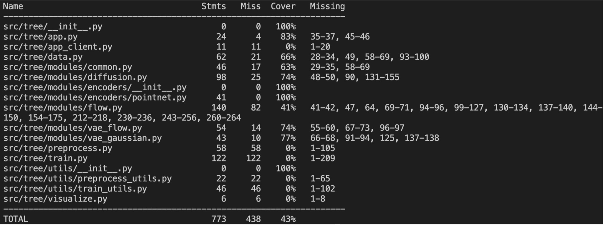
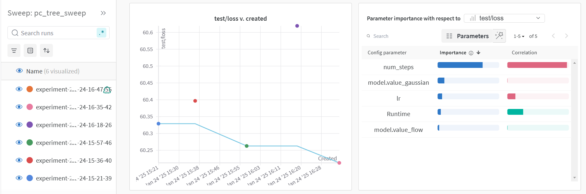
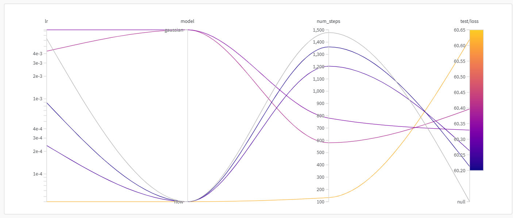
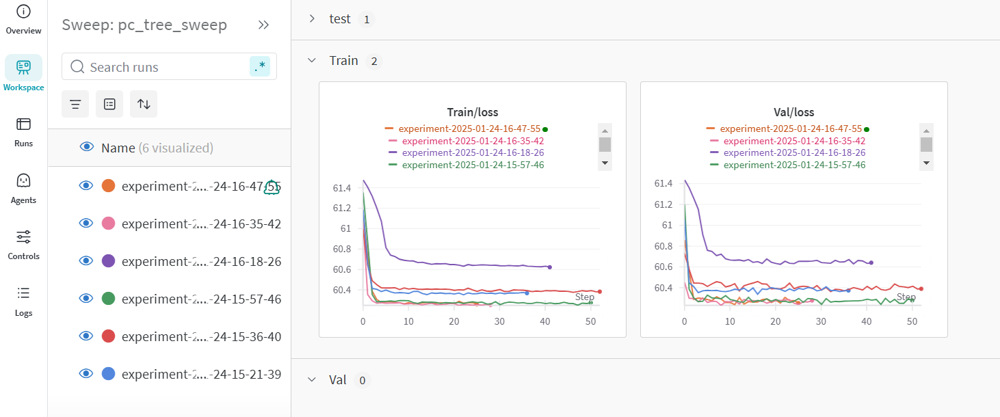
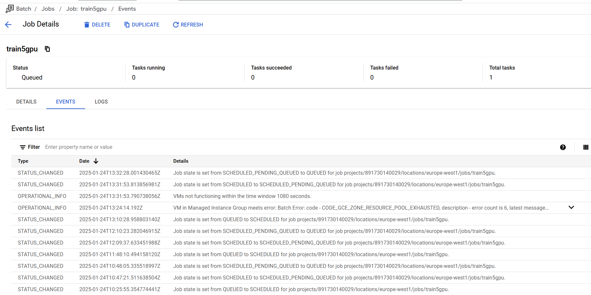
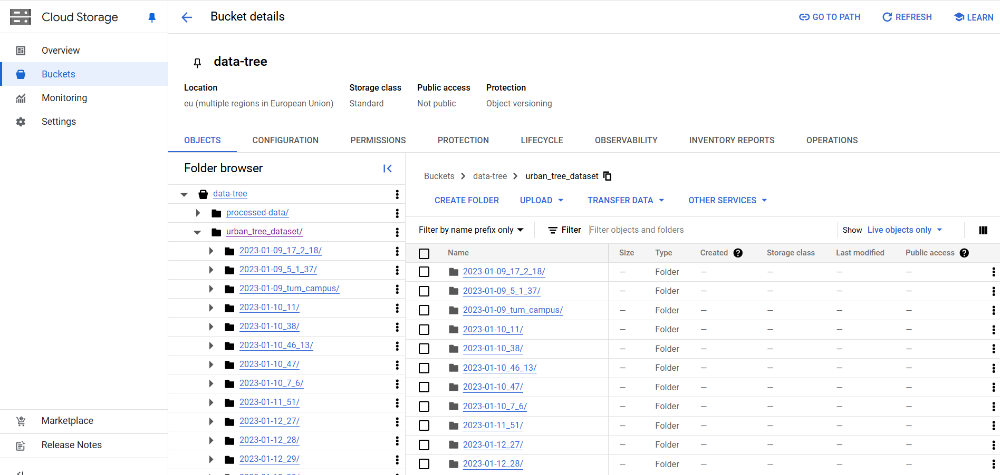
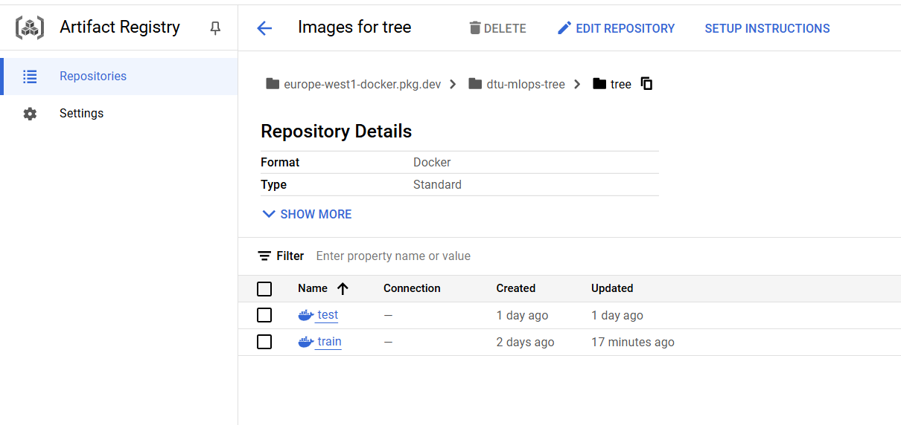
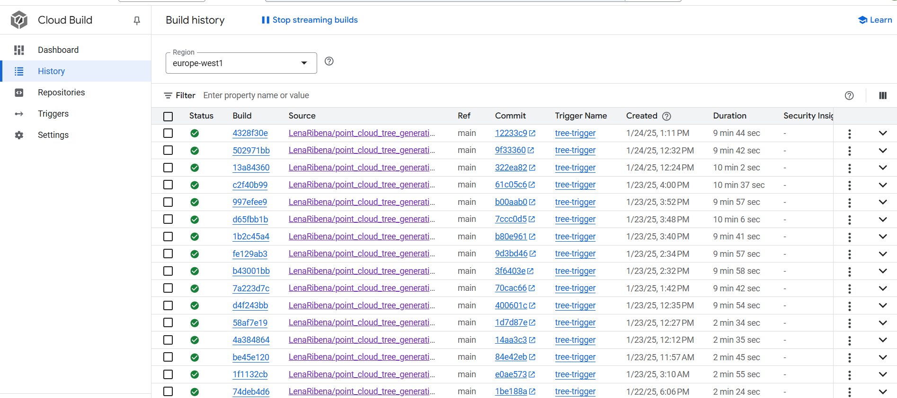

Operations
This is the report template for the exam. Please only remove the text formatted as with three dashes in front and behind like:
--- question 1 fill here ---
Where you instead should add your answers. Any other changes may have unwanted consequences when your report is
auto-generated at the end of the course. For questions where you are asked to include images, start by adding the image
to the figures subfolder (please only use .png, .jpg or .jpeg) and then add the following code in your answer:
markdown

In addition to this markdown file, we also provide the report.py script that provides two utility functions:
Running:
bash
python report.py html
Will generate a .html page of your report. After the deadline for answering this template, we will auto-scrape
everything in this reports folder and then use this utility to generate a .html page that will be your serve
as your final hand-in.
Running
bash
python report.py check
Will check your answers in this template against the constraints listed for each question e.g. is your answer too short, too long, or have you included an image when asked. For both functions to work you mustn't rename anything. The script has two dependencies that can be installed with
bash
pip install typer markdown
The checklist is exhaustive which means that it includes everything that you could do on the project included in the curriculum in this course. Therefore, we do not expect at all that you have checked all boxes at the end of the project. The parenthesis at the end indicates what module the bullet point is related to. Please be honest in your answers, we will check the repositories and the code to verify your answers.
data.py file such that it downloads whatever data you need and preprocesses it (if necessary) (M6)model.py and a training procedure to train.py and get that running (M6)requirements.txt and requirements_dev.txt file with whatever dependencies that you
are using (M2+M6)pep8) while doing the project (M7)Enter the group number you signed up on
Answer:
25
Enter the study number for each member in the group
Example:
sXXXXXX, sXXXXXX, sXXXXXX
Answer:
s214629, s214655, s216135
A requirement to the project is that you include a third-party package not covered in the course. What framework did you choose to work with and did it help you complete the project?
Recommended answer length: 100-200 words.
Example: We used the third-party framework ... in our project. We used functionality ... and functionality ... from the package to do ... and ... in our project.
Answer:
We used open3d as a framework to display the generated tree point clouds. We used the functionality of visualizing via the functionvisualization.draw_geometries() to render the data and generated trees. To assist the illusion, paint_uniform_color allows us to draw them green.
In the following section we are interested in learning more about you local development environment. This includes how you managed dependencies, the structure of your code and how you managed code quality.
Explain how you managed dependencies in your project? Explain the process a new team member would have to go through to get an exact copy of your environment.
Recommended answer length: 100-200 words
Example: We used ... for managing our dependencies. The list of dependencies was auto-generated using ... . To get a complete copy of our development environment, one would have to run the following commands
Answer:
We used conda/miniconda as a package manager. We would continuously update our requirements(_dev).txt files with whatever package(s) we needed, but without specifying the version. Finally, when the project was done, we created a brand new virtual environment from the created requirement files, and look for any possible dependency issues when running all relevant files. If the files could be run without encountering an error, the specific versions would be documented by listing their version number using conda list and copying it over.
To get a complete copy of our development structure, one would have to run the following:
pip install -r requirements_dev.txt
pip install -e .
We expect that you initialized your project using the cookiecutter template. Explain the overall structure of your code. What did you fill out? Did you deviate from the template in some way?
Recommended answer length: 100-200 words
Example: From the cookiecutter template we have filled out the ... , ... and ... folder. We have removed the ... folder because we did not use any ... in our project. We have added an ... folder that contains ... for running our experiments.
Answer:
From the cookiecutter template, our structure mostly follows: The source code is located within the src/tree folder including data processing, model construction and training. Due to a large number of module classes, a modules folder was created within the source code. Extra functions would also be placed in a utils folder for a cleaner code environment. Docker files, config files, saved models and test files were all separated in their respective folders. Deviation from the template included the creation of a devcontainer to work in, a batch jobs folder to submit training code to the GCP Compute Engine. Furthermore, several dotfiles were created such as cloudbuild, pre-commit and dvc configuration.
Did you implement any rules for code quality and format? What about typing and documentation? Additionally, explain with your own words why these concepts matters in larger projects.
Recommended answer length: 100-200 words.
Example: We used ... for linting and ... for formatting. We also used ... for typing and ... for documentation. These concepts are important in larger projects because ... . For example, typing ...
Answer:
Regarding the GitHub project, two rules were enforced using the ruleset option: 1) Pull requests needed to be reviewed by someone other than the one requesting, and 2) All code requested to be merged into main must pass all created GitHub action tests.
Regarding formatting, pre-commits were implemented such that all committed code would be checked for: Trailing whitespaces, end-of-file fixer, yaml checking and added larger files. Additionally, ruff would, prior to accepting the commit, format any file to comply with rules added in the pyproject.toml. Mypy would also check for correct typing, and would have to be manually edited.
In larger projects, it is important to implement rules to test for code quality and formatting, as it adds to the explainability and consistency of the code both among project members and peer review. It also ensures that any merges to main do not result in unexpected errors that were otherwise absent in earlier iterations.
In the following section we are interested in how version control was used in your project during development to corporate and increase the quality of your code.
How many tests did you implement and what are they testing in your code?
Recommended answer length: 50-100 words.
Example: In total we have implemented X tests. Primarily we are testing ... and ... as these the most critical parts of our application but also ... .
Answer:
For the data, we have tested: - Correct instance types - Correct dataset length - Correct splitting into train, val and test sets - Correct shaping of data - Correct device matching and error raising - Correct test creation of data loaders
For the model, we have tested: - Correct instance types for all model outputs - Correct shape of input (and nested inputs) - Correct range of values for relevant methods - Correct shapes and types of all common functions used by all models
For the api, we have tested: - Correct return type; a generated tree with the correct shape - Correct response status code is 200.
What is the total code coverage (in percentage) of your code? If your code had a code coverage of 100% (or close to), would you still trust it to be error free? Explain you reasoning.
Recommended answer length: 100-200 words.
Example: The total code coverage of code is X%, which includes all our source code. We are far from 100% coverage of our ** code and even if we were then...*
Answer:
Our report created by coverage can be seen in the following figure

While of course, it is good that as much code as possible is being tested, a code coverage score of 100% would not equal an error-free code: The coverage percentage may not account for edge case testing. In general, it is good practice to account for different types of input such as None, nan, infinity and negative to ensure that the program acts in a desired way. Error checks may also help to ensure that the correct error message is displayed. Edge cases were mititigated a little using mypy, that multiple types showed us that a certain type was assumed, when really it could take another type - typically None.
Did you workflow include using branches and pull requests? If yes, explain how. If not, explain how branches and pull request can help improve version control.
Recommended answer length: 100-200 words.
Example: We made use of both branches and PRs in our project. In our group, each member had an branch that they worked on in addition to the main branch. To merge code we ...
Answer:
We had a main branch where other branches would be created from this branch. These branches would have the name of the feature that they implemented and when done, they would be merged into the main branch through pull requests. This helps versioning as it is much easier to keep track of features and their progress as well as making sure it is only the final working feature that is merged onto main. Whenever a feature was merged into main, the branch would be deleted.
Did you use DVC for managing data in your project? If yes, then how did it improve your project to have version control of your data. If no, explain a case where it would be beneficial to have version control of your data.
Recommended answer length: 100-200 words.
Example: We did make use of DVC in the following way: ... . In the end it helped us in ... for controlling ... part of our pipeline
Answer:
We used DVC for accessing our data remotely from a bucket in Google Cloud Storage. Likewise, all saved models were also linked to dvc. This was necessary for the project, as the data was too large to upload to GitHub and it made it easier to access when running Docker builds.
Discuss you continuous integration setup. What kind of continuous integration are you running (unittesting, linting, etc.)? Do you test multiple operating systems, Python version etc. Do you make use of caching? Feel free to insert a link to one of your GitHub actions workflow.
Recommended answer length: 200-300 words.
Example: We have organized our continuous integration into 3 separate files: one for doing ..., one for running ... testing and one for running ... . In particular for our ..., we used ... .An example of a triggered workflow can be seen here:
Answer:
A workflows folder was created with several tests that would be triggered when either 1) Pushes to the main branch or 2) Pull requests to the main branch. The latest version of MacOS, Windows and Ubuntu was tested with python 3.11 and 3.12. This would test: 1) Correctly checking out 2) Authenticating with GCP 3) Setting up Google Cloud SDK 4) Checking the GCP authentication 5) Download a subset of the data stored in CS 6) Setting up Python 7) Installing dependencies 8) Testing all unit tests and performance tests 9) Making a coverage report
In the following section we are interested in learning more about the experimental setup for running your code and especially the reproducibility of your experiments.
How did you configure experiments? Did you make use of config files? Explain with coding examples of how you would run a experiment.
Recommended answer length: 50-100 words.
Example: We used a simple argparser, that worked in the following way: Python my_script.py --lr 1e-3 --batch_size 25
Answer:
We mainly used Hydra with config yaml files specific to the task; specifically, one was created for configuring any preprocessing, and one was created for configuring the training arguments - among some of which are hyperparameters. In order to run the task, an example could be to either run it with the default configs in the config file python -m tree.train or if we want to overwrite anything for specific experiments: python -m tree.train epochs=40 model=flow
Sweeping was also implemented using wandb in connection with Hydra. The sweep would run over the training script, and run a bayesian optimization over the hyperparameters defined in the Hydra configuration file. To run a sweep, one would need to run wandb sweep configs/sweep.yaml, followed by: wandb agent <sweep_id>
Reproducibility of experiments are important. Related to the last question, how did you secure that no information is lost when running experiments and that your experiments are reproducible?
Recommended answer length: 100-200 words.
Example: We made use of config files. Whenever an experiment is run the following happens: ... . To reproduce an experiment one would have to do ...
Answer:
We used Hydra to configure all our tasks which would save a copy of the used config files for the experiment, and by overwriting the hydra output folder we could make it save the configs in the experiment specific folder. Is anyone reading this? Setting the pytorch seed as torch.manual_seed(args.seed) was also done before training started.
A docker image were also created for reproducibility purposes such that any current or new developer can work with the same setup.
Upload 1 to 3 screenshots that show the experiments that you have done in W&B (or another experiment tracking service of your choice). This may include loss graphs, logged images, hyperparameter sweeps etc. You can take inspiration from this figure. Explain what metrics you are tracking and why they are important.
Recommended answer length: 200-300 words + 1 to 3 screenshots.
Example: As seen in the first image when have tracked ... and ... which both inform us about ... in our experiments. As seen in the second image we are also tracking ... and ...
Answer:
The following images are from a sweep.



As seen on the third image we have tracked training loss and validation loss over each epoch. Test loss was not tracked in order to save time for the training. When running sweep we could also keep track of the parameters and how the sweep runs was doing which each run.
Docker is an important tool for creating containerized applications. Explain how you used docker in your experiments/project? Include how you would run your docker images and include a link to one of your docker files.
Recommended answer length: 100-200 words.
Example: For our project we developed several images: one for training, inference and deployment. For example to run the training docker image:
docker run trainer:latest lr=1e-3 batch_size=64. Link to docker file:Answer:
For our project we had several images, one for API, and one for development. The development docker would be run with a devcontainer during development and when training models over Google Cloud Batch, the run command would be the following:
bash
docker run -e WANDB_PROJECT=$WANDB_PROJECT \
-e WANDB_ENTITY=$WANDB_ENTITY \
-e WANDB_API_KEY=$WANDB_API_KEY \
--volume /mnt/disks/data-tree/processed-data:/trees/data/processed \
--volume /mnt/disks/models:/trees/models \
--gpus all \
--entrypoint /bin/bash europe-west1-docker.pkg.dev/dtu-mlops-tree/tree/train:latest -c "wandb sweep configs/sweep.yaml"
Where /mnt/disks/data-tree/processed-data would be the location which the GCS data bucket is mounted on the vm which can be seen in more details in the GC Batch config file
When running into bugs while trying to run your experiments, how did you perform debugging? Additionally, did you try to profile your code or do you think it is already perfect?
Recommended answer length: 100-200 words.
Example: Debugging method was dependent on group member. Some just used ... and others used ... . We did a single profiling run of our main code at some point that showed ...
Answer:
We have been using the VS Code debugger mainly and in some cases used the pdb Python library with pdb.set_trace(), whenever code had to be run via the command line. We did not do any profiling as that tool can mainly be used to identify bottlenecks and where code can be optimized where the time given for this project was already limited so optimizing was not a priority.
In the following section we would like to know more about your experience when developing in the cloud.
List all the GCP services that you made use of in your project and shortly explain what each service does?
Recommended answer length: 50-200 words.
Example: We used the following two services: Engine and Bucket. Engine is used for... and Bucket is used for...
Answer:
Storage: Storing the data and models. Storage FUSE: Mounting stored data on GCS to personal computer in order to test and develop locally. Batch/Compute Engine: Batch for sending batch jobs for training which would automatically create a temporary VM in and delete it when the batch job is done. Artifact Registry: To store docker images. *Build: To trigger upon every time a change has been made in the main github branch which builds and then pushes an updated docker image in Artifact Registry.
The backbone of GCP is the Compute engine. Explained how you made use of this service and what type of VMs you used?
Recommended answer length: 100-200 words.
Example: We used the compute engine to run our ... . We used instances with the following hardware: ... and we started the using a custom container: ...
Answer:
We use Compute Engine through Google Cloud Batch which creates a VM in Compute Engine for each training job with the configurations given and then deletes the VM after. The VM has mounted volumes from GCS, the processed data and the models folder, where it'll save the experiments to the models folder on GCS. When training we would be using the machine n1-standard-2 with the GPU nvidia-tesla-t4, but unfortunately these resources weren't available:

So we ended up trying to do it over CPU with the machine e2-standard-4, which took more than 30 minutes per epoch and in the end we decided to train locally.
Insert 1-2 images of your GCP bucket, such that we can see what data you have stored in it. You can take inspiration from this figure.
Answer:

Upload 1-2 images of your GCP artifact registry, such that we can see the different docker images that you have stored. You can take inspiration from this figure.
Answer:

Upload 1-2 images of your GCP cloud build history, so we can see the history of the images that have been build in your project. You can take inspiration from this figure.
Answer:

Did you manage to train your model in the cloud using either the Engine or Vertex AI? If yes, explain how you did it. If not, describe why.
Recommended answer length: 100-200 words.
Example: We managed to train our model in the cloud using the Engine. We did this by ... . The reason we choose the Engine was because ...
Answer:
Yes. By using Google Cloud Batch, a VM would be created by running gcloud batch jobs submit <BATCH_JOB_NAME> --location europe-west1 --config batch_jobs/config.json where the specifications of the machine is defined inside the config file.
The VM would then have mounted the GCS buckets data-tree and models-tree. Commands would then be run through the "script" field inside the batch config. In order to make it easier to define the commands, the commands would be gathered in a bash script where it would be parsed into the batch config file by running a python file.
Nvidia container toolkit would then be installed on the VM, the train docker image pulled from Artifact Registry and then the image would be run with the GCS mounted volumes further mounted onto the docker. where the image would save the results inside the mounted models folder, making the experiment logs, configs and models visible inside GCS.
A problem we encountered is that we couldn't get any GPUs for the batch jobs as the "pool was exhausted for that region."
Did you manage to write an API for your model? If yes, explain how you did it and if you did anything special. If not, explain how you would do it.
Recommended answer length: 100-200 words.
Example: We did manage to write an API for our model. We used FastAPI to do this. We did this by ... . We also added ... to the API to make it more ...
Answer:
An API called app.py hosts a server that generates tree point clouds. The user can choose the generation model by specifying either generate/flow or generate/gauss in the url as seen in the app_client.py example usage. To avoid having to load the models upon every GET request, FastAPI lifespan parameter is used to store the model instances in a dictionary for later use.
Did you manage to deploy your API, either in locally or cloud? If not, describe why. If yes, describe how and preferably how you invoke your deployed service?
Recommended answer length: 100-200 words.
Example: For deployment we wrapped our model into application using ... . We first tried locally serving the model, which worked. Afterwards we deployed it in the cloud, using ... . To invoke the service an user would call
curl -X POST -F "file=@file.json"<weburl>Answer:
Locally - couldn't be bothered.
Did you perform any unit testing and load testing of your API? If yes, explain how you did it and what results for the load testing did you get. If not, explain how you would do it.
Recommended answer length: 100-200 words.
Example: For unit testing we used ... and for load testing we used ... . The results of the load testing showed that ... before the service crashed.
Answer:
The API is extremely simple with one method taking an argument that selects either the flow or gauss model for tree generation. Load testing returned the following results: Average response time was 279.58 ms, 95th percentile response time was 360 ms for one user.
Did you manage to implement monitoring of your deployed model? If yes, explain how it works. If not, explain how monitoring would help the longevity of your application.
Recommended answer length: 100-200 words.
Example: We did not manage to implement monitoring. We would like to have monitoring implemented such that over time we could measure ... and ... that would inform us about this ... behaviour of our application.
Answer:
We did not manage to implement monitoring. Monitoring could have been implemented both user-experience side such as: 1) The correlation between wait-time and requests per second in order to measure the user experience and profile how the model could be optimized, and 2) The usefulness of the generated trees perhaps by implementing a metric for how many generated trees were in fact downloaded to the computer and 3) the preference of models used to generate trees. And model performance wise on could use monitoring to make sure 1) The model deployment is not failing or having problems 2) The model is performing as expected.
In the following section we would like you to think about the general structure of your project.
How many credits did you end up using during the project and what service was most expensive? In general what do you think about working in the cloud?
Recommended answer length: 100-200 words.
Example: Group member 1 used ..., Group member 2 used ..., in total ... credits was spend during development. The service costing the most was ... due to ... . Working in the cloud was ...
Answer:
We used $3.77 for the project. While everything was set up to train using batch jobs on the Compute Engine, sadly, no GPU's were ever available in the chosen region. Therefore, we ran things locally to get results faster :(
Did you implement anything extra in your project that is not covered by other questions? Maybe you implemented a frontend for your API, use extra version control features, a drift detection service, a kubernetes cluster etc. If yes, explain what you did and why.
Recommended answer length: 0-200 words.
Example: We implemented a frontend for our API. We did this because we wanted to show the user ... . The frontend was implemented using ...
Answer:
The extra features not introduced in the course were: - The devcontainer - Batch jobs set up for Compute Engine
Include a figure that describes the overall architecture of your system and what services that you make use of. You can take inspiration from this figure. Additionally, in your own words, explain the overall steps in figure.
Recommended answer length: 200-400 words
Example:
The starting point of the diagram is our local setup, where we integrated ... and ... and ... into our code. Whenever we commit code and push to GitHub, it auto triggers ... and ... . From there the diagram shows ...
Answer:
--- question 29 fill here ---
Discuss the overall struggles of the project. Where did you spend most time and what did you do to overcome these challenges?
Recommended answer length: 200-400 words.
Example: The biggest challenges in the project was using ... tool to do ... . The reason for this was ...
Answer:
A lot of time was initially spent on finding relevant data and papers for how to approach the problem. A lot of considerations went into how the data was distributed, and how it should be handled/preprocessed to work in a PyTorch pipeline all while not training for too long. When the pipeline was determined, the greatest struggles involved the communication between the different tools presented i.e setting up wand while using Hydra for config handling, or unit testing the data with data stored remotely. Viewed in isolation, it was mostly not the tools themselves that were difficult to set up, but more the implementation of the entire workflow such that no errors would occur. A lot of time was also spent on resolving the errors produced by mypy.
State the individual contributions of each team member. This is required information from DTU, because we need to make sure all members contributed actively to the project. Additionally, state if/how you have used generative AI tools in your project.
Recommended answer length: 50-300 words.
Example: Student sXXXXXX was in charge of developing of setting up the initial cookie cutter project and developing of the docker containers for training our applications. Student sXXXXXX was in charge of training our models in the cloud and deploying them afterwards. All members contributed to code by... We have used ChatGPT to help debug our code. Additionally, we used GitHub Copilot to help write some of our code. Answer:
Student s214629 was in charge of: - Find relevant paper(s) - Loading and preprocessing data - Mounting data from GCS to local computer and documenting it on different OS - Creating dockerfiles, devcontainer and setting up cloudbuild with a trigger - Setting up GC Batch to send batch jobs to train the models on Compute Engine - Setting up pipeline and batch job scripts such that it runs with the container in Artifact Registry pushed by Build, mounting GCS buckets to the VM and using GC Secret Mager to login to wandb.
Student s214655 was in charge of: - Find relevant paper(s) - Setting up git with the cookie cutter project template including any rulesets - Implementation of the model training - Setting up config files and loading them using Hydra - Setting up wandb sweeping - Logging relevant metrics - Setting up the continuous integration workflow which includes - Connecting wandb and Cloud Storage with GitHub actions - Unit testing of the data and models - Creating dockerfiles, devcontainer and setting up cloudbuild with a trigger
Student s216135 was in charge of: - Requirements and requirements_dev files testing and finalization - Setting up version control (dvc) to Cloud Storage - Setting up an API and subsequent tree visualization - Updating all code to conform to mypy - what a bitch - Setting up the continuous integration workflow which includes - Setting up multi-testing for multi OS - Unit testing of the data, models and API - Setting up pre-commit with ruff and other good coding practices
All members contributed to the code, debugging and the final README, and we do not believe the contribution is skewed in any way. We have used ChatGPT mainly for helping with instructions to navigate GitHub and GCP. CoPilot has also helped with debugging the code and implementing meaningful unit tests.
{kind=link}
{kind=link}
{kind=link}
{kind=link}
{kind=link}